内容判断
先问“为什么说”和“对谁说”，再决定做什么。不把热闹误当成有效。
AVAILABLE FOR IDEAS
HI, I'M YANG MO
用内容策略组织注意力
用视觉与 AI 把想法变成作品
[POINT OF VIEW]
我相信内容运营不是“把东西发出去”，而是让人理解一个品牌为什么值得被记住。
从目标与受众出发，把选题、视觉、渠道和协作串在一起；再通过反馈和复盘，让下一次表达更准确一点。
先问“为什么说”和“对谁说”，再决定做什么。不把热闹误当成有效。
把策略语言转化成画面、节奏和可延展的视觉资产，让内容有一致性。
能与产品、前端、活动执行和外部供应商协作，把想法推进到可交付状态。
四个方向，同一套底层能力：发现内容机会、建立表达系统、推动跨角色协作。 真实数据没有出现的地方，我不会替它补上。
以五个品牌的视觉语言为起点，完成从创意脚本、AI 生成到剪辑包装的个人概念短片。
[CASE 01 / PERSONAL AI CONCEPT]
个人品牌概念练习 · 片段长 40 秒
原片 01:45 · 网页版为精选片段
[AI FASHION FILM / 02]
以固定角色与造型设定为基础，在真实感镜头中延展动作、材质与穿搭细节。
02 FILMS
00:05 EACH
[BRIEF]
当用户已经被广告训练得极快划走，怎样让一个品牌在 8 秒里留下一个能被复述的反差？
这条短片以 Oreo、Dior、Chanel、Tiffany 与 Starbucks 各自的品牌语言为起点，为每个品牌设计一个超现实的产品场景，再用同一个甜点叙事把它们串起来。
我的工作不是把标志放进生成画面，而是先确定“如果这个品牌讲一个荒诞故事，故事应该说什么”，再统一镜头、字幕和节奏。
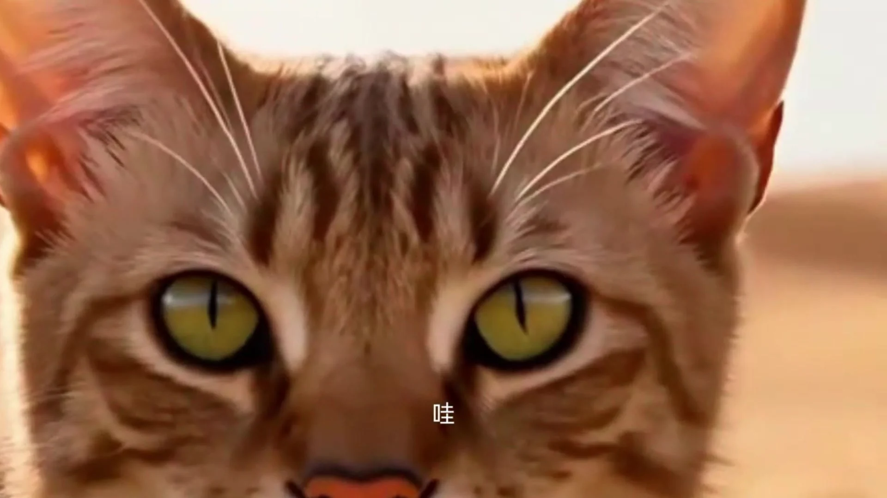
[CASE 04 / IP VISUAL CONCEPT]
食契庙约
LAO CHENG HUANG / A NEW VOICE FOR AN OLD TASTE
老字号需要新鲜感，但新鲜感不等于把自己变成另一个品牌。项目从城隍庙、石狮子与梨膏糖这三个线索出发，建立一套既有传统底色、又能进入日常传播的角色与包装语言。
[APPROACH]
把石狮子从建筑符号转为有表情、有性格、可重复出现的角色。
用橄榄绿、纸张与青铜质感建立统一色彩，让历史感不过度沉重。
让同一套视觉进入包装、手提袋、杯具、贴纸与社媒内容。
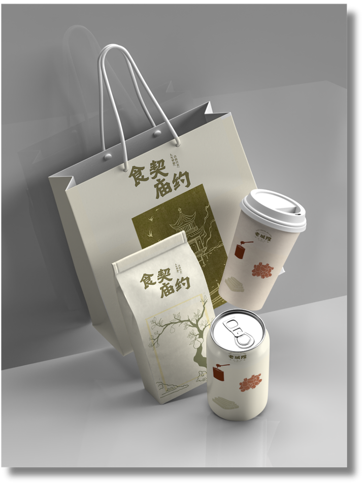
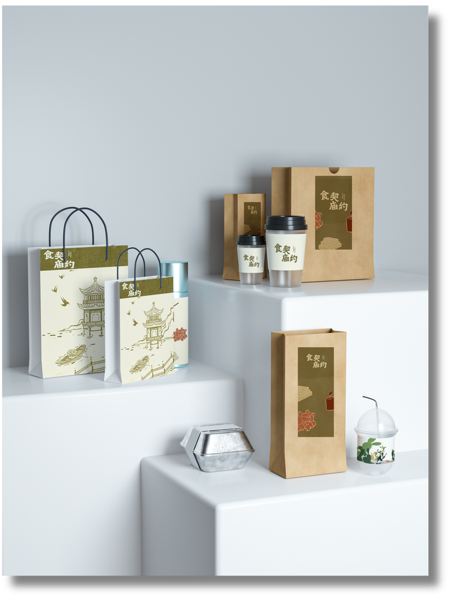
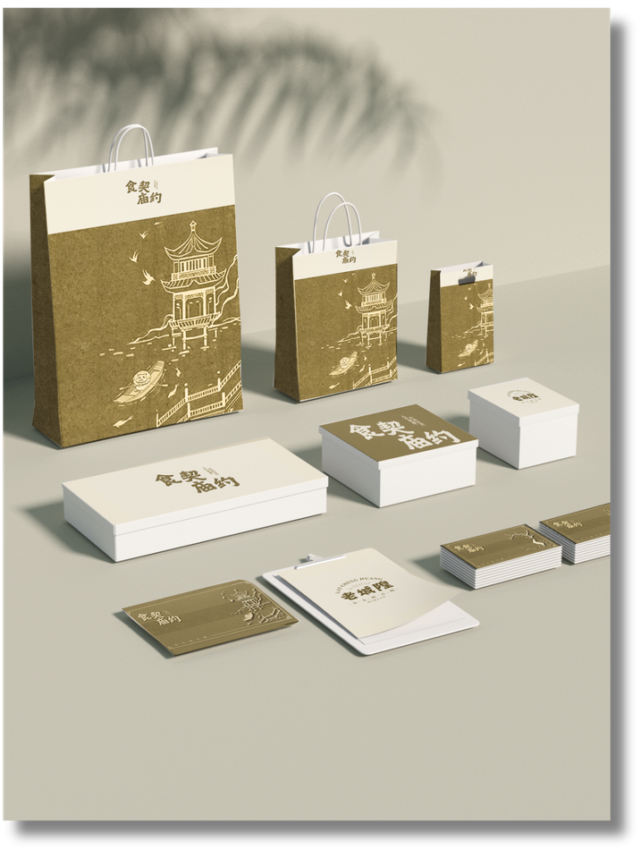
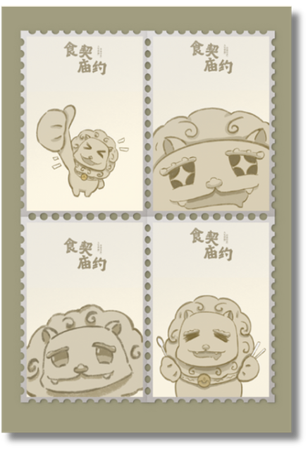
[CASE 02 / CULTURE CONTENT SYSTEM]
[CONTEXT]
在声网企业文化相关工作中，我参与搭建文化表达系统，维护内部文化栏目，并支持周年、团建和员工关怀活动。员工周年界面把“祝福”从一张贺卡变成可记录、可分享、可回看的互动内容。
[SYSTEM]
从价值观与文化理念出发，参与设计文化手册、员工行为规范和基础视觉语言，让不同活动有一致的气质。
[RHYTHM]
维护内部社群与公众号文化栏目，月度产出 8—10 篇原创内容，使文化传播从偶发活动变成持续栏目。
[EXPERIENCE]
通过周年贺卡、员工寄语与界面流程，把“收到一条通知”转化成“表达一次自己、留下一个共同记忆”。
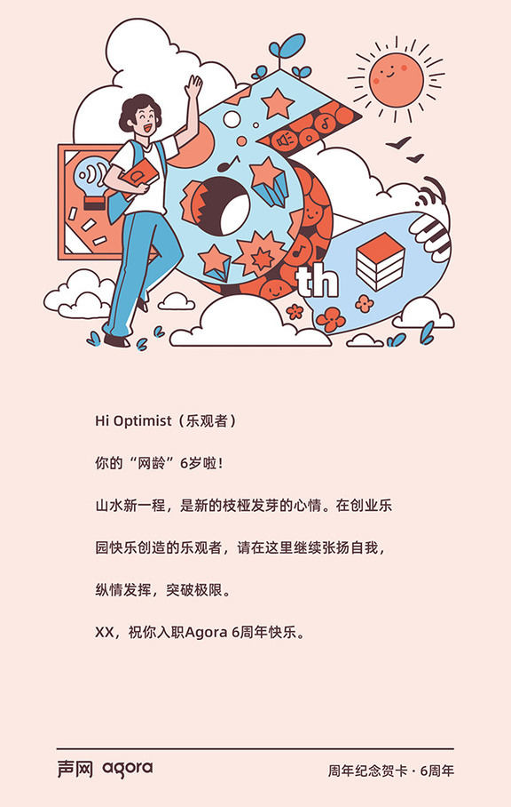
[FORMAT AS LANGUAGE]
海报是我做内容运营时最直接的一层能力：把抽象主题转成一个能停住滑动、 被迅速读懂、并且愿意继续看下去的画面。
[VISUAL NOTE]
信息层级、影像关系和文字节奏必须一起工作。画面可以先于解释，但不能阻止理解。
VISUAL ≠ DECORATIONSELECTED VISUAL OUTPUT
07 MORE WORKS / 2024—2025
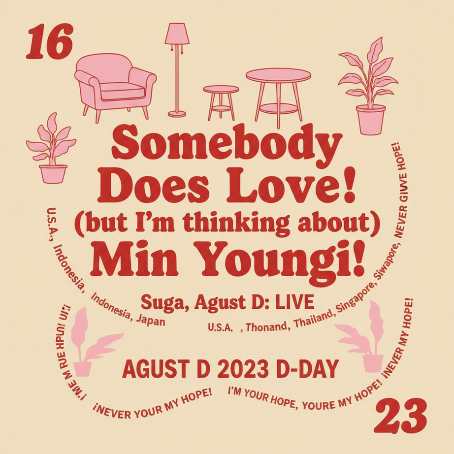
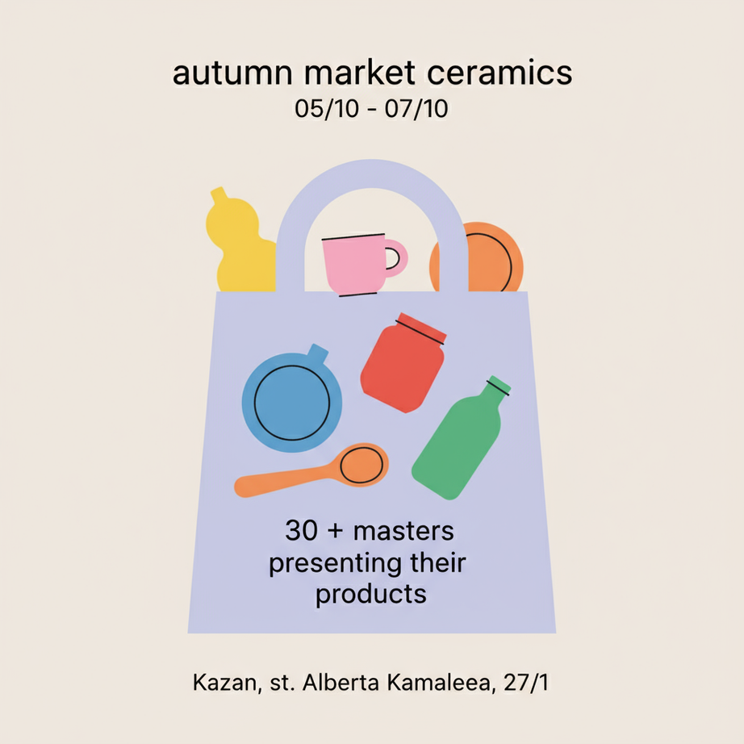
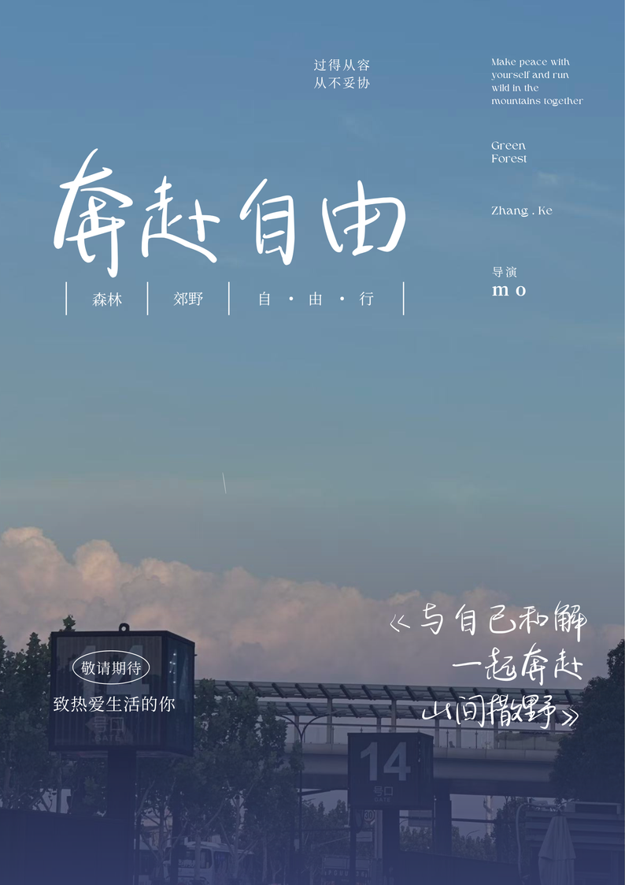
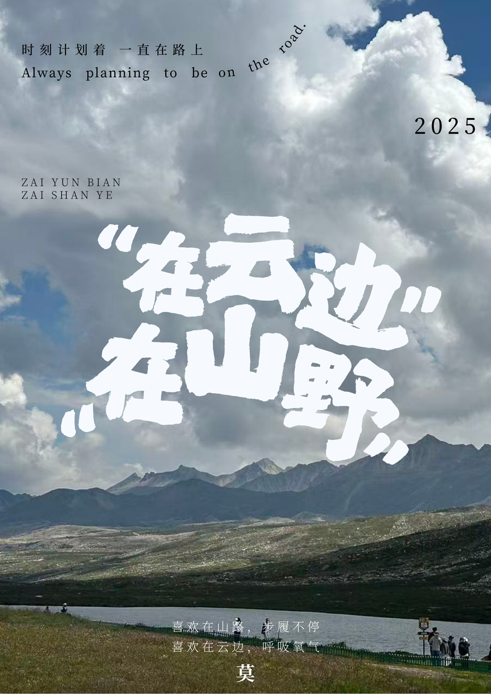
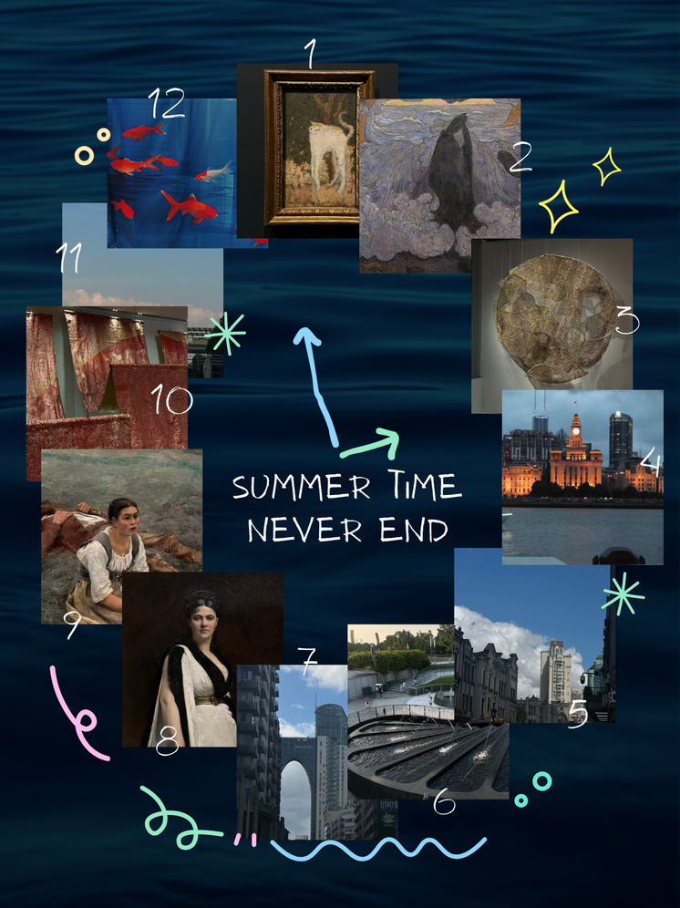
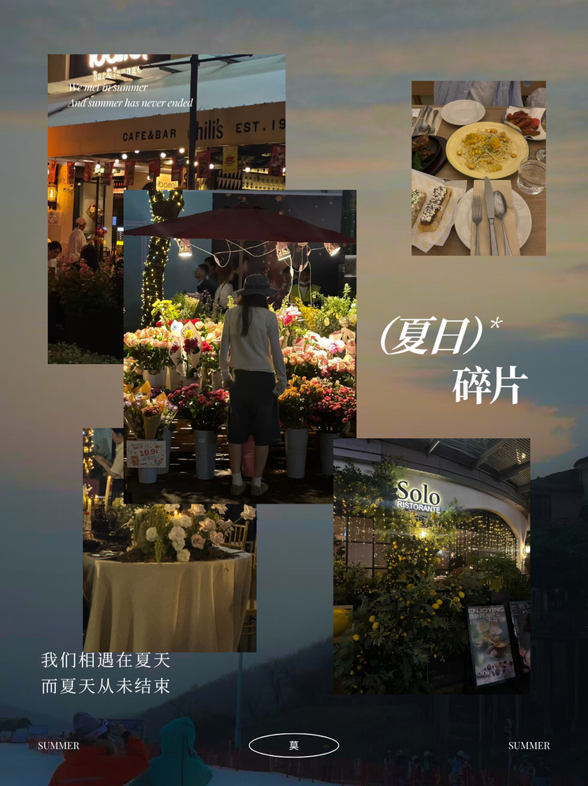
好的内容看起来像一个自然的结果，背后却需要先把目标、受众、渠道和资源说清楚。
[FRAME]
把模糊需求拆成目标、受众、场景与成功标准，先确定什么值得被表达。
[STRUCTURE]
建立主题、栏目和节奏，让单条内容能积累成一套可识别的表达系统。
[MAKE]
与产品、设计、前端、活动执行和供应商协作，把想法推进到真实可用。
[REVIEW]
记录反馈、识别有效动作，在没有数据时如实说明，在有数据时拒绝主观叙事。
主题规划、内容栏目、传播节奏、平台适配
品牌文案、活动内容、社群与内部传播
品牌 VI、海报、包装、UI 与跨尺寸视觉延展
AI 视觉资产、概念短片、镜头组织与后期包装
内部社群、员工关怀、活动策划与现场协作
需求沟通、设计说明、制作跟进出片与落地
Photoshop
Illustrator
After Effects
Blender
AI Visual Tools
Editing / Presentation
不是每一个项目都要成为主案例，但它们共同构成了我做内容与协作的方式。
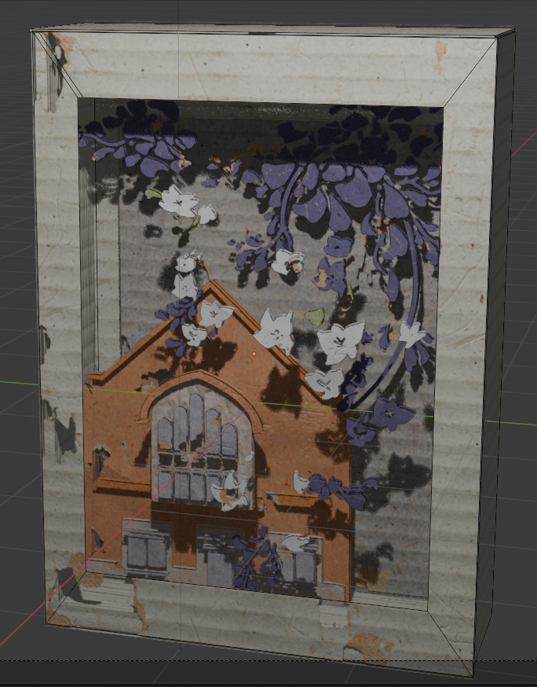
倒计时海报、打卡装置、指引系统与活动执行
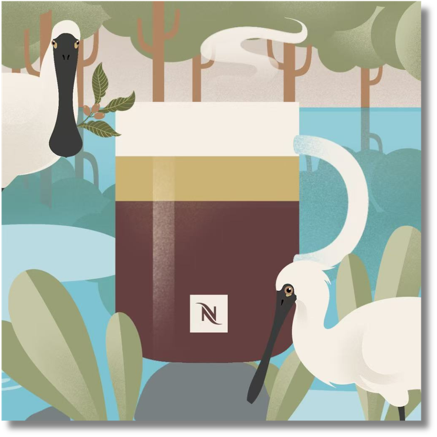
从品牌理念到图像语言，保持载体变化中的识别度
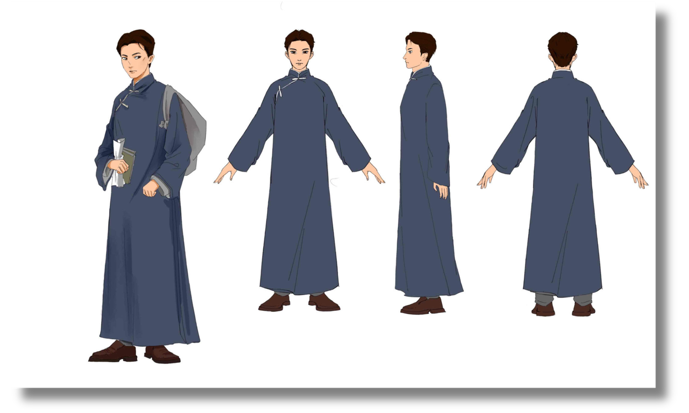
角色设定、造型一致性与叙事身份
如果你正在寻找内容运营、创作者运营或 AIGC 内容方向的新同事，我们可以聊聊：内容如何被组织，品牌如何被理解，作品如何真正走到人群里。